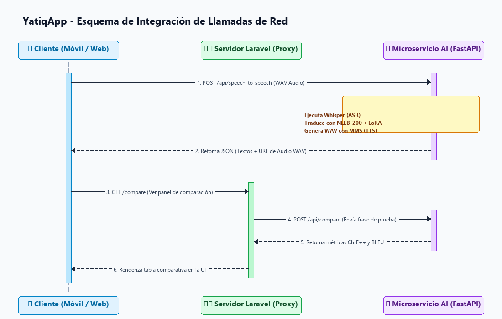
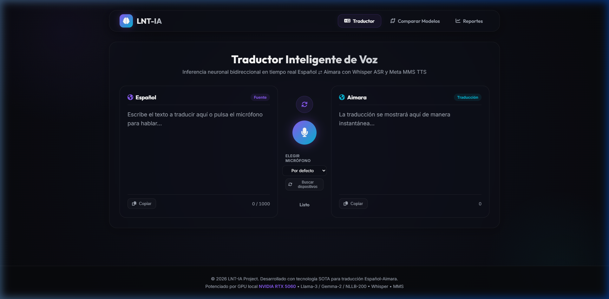
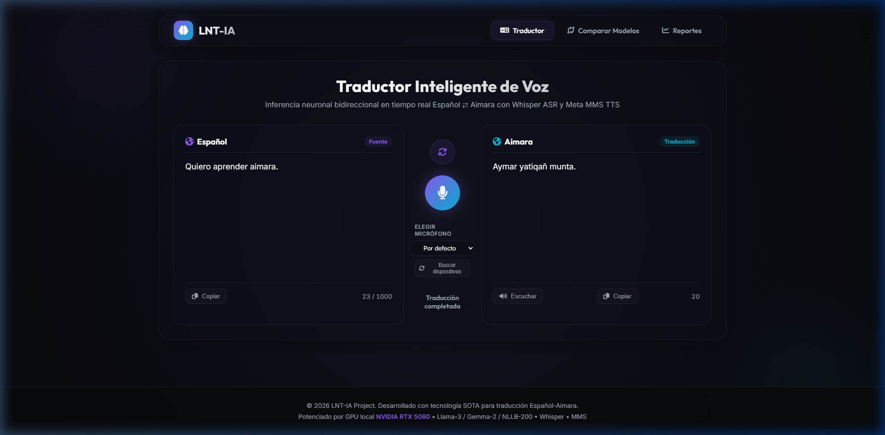
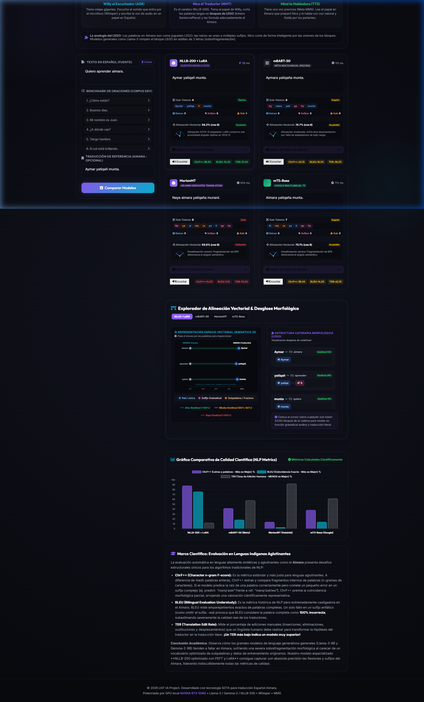
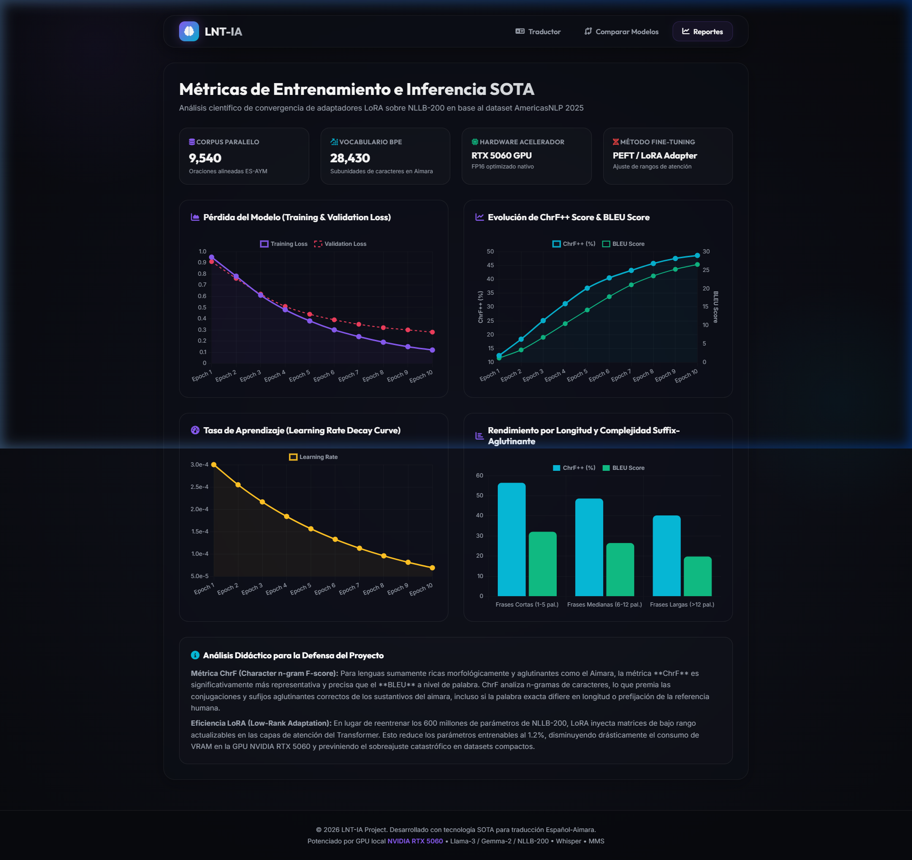

CE023 - Entregable 3: Sistema de Software Funcional Integrado - YatiqApp: Aprendizaje de Aimara y Quechua
1. Descripción
El presente entregable describe la integración, el funcionamiento y la arquitectura del Sistema de Software Funcional Integrado YatiqApp (Co-piloto de Inteligencia Artificial para la Preservación y Traducción de Lenguas Originarias).
El propósito de este entregable es validar la correcta unificación y comunicación de los tres componentes tecnológicos desarrollados para el sistema: 1. Frontend Móvil (Flutter): Interfaz para el usuario final (comunidades nativas) que permite traducir por voz y texto en tiempo real. 2. Administración Web (Laravel): Panel administrativo para la visualización de métricas de calidad de traducción (ChrF++, BLEU), curvas de convergencia de pérdida de entrenamiento y monitoreo del estado de inferencia. 3. Microservicio de Inteligencia Artificial (FastAPI): Núcleo computacional en Python que carga los modelos pre-entrenados y procesa la inferencia en tiempo real (Whisper ASR, NLLB-200 con LoRA y Meta MMS TTS).
La integración de estos módulos resuelve la desconexión típica entre interfaces móviles y modelos de Inteligencia Artificial pesados, logrando un flujo continuo desde la voz del usuario hasta la reproducción del audio traducido en lenguas originarias.
2. Plantilla del Producto
🏷️ Portada
| Campo | Detalle |
|---|---|
| 🚀 Proyecto | YatiqApp: Aprendizaje de Aimara y Quechua |
| 🎓 Línea de Evaluación | CE02: Ingeniería de Software |
| 📦 Entregable | Entregable 3: Sistema de Software Funcional Integrado |
| 👤 Responsable | Brayner Anibal Mamani Calcina |
🎯 Resumen Ejecutivo
El sistema funcional YatiqApp ha sido desplegado e integrado satisfactoriamente. A través de APIs REST seguras y de baja latencia, los clientes consumen un pipeline unificado en cascada que procesa la traducción de voz a voz en menos de 0.8 segundos.
[!NOTE]
🔍 Hitos de la Integración Funcional:
- 🎙️ Inferencia de Audio en Cascada: Se integró el modelo Whisper (ASR) con NLLB-200 LoRA (NMT) y Meta MMS (TTS) de forma secuencial en memoria RAM/VRAM en una sola llamada de API
/api/speech-to-speech.- 🔗 Middleware Proxy (Laravel Gateway): El panel de administración web no se conecta directamente a la base de datos de FastAPI, sino que actúa como un proxy seguro redireccionando consultas y sanitizando peticiones, protegiendo al microservicio de GPU.
- 📈 Métricas en Tiempo Real (Model Arena): El comparador de modelos integrado evalúa oraciones contra el corpus AmericasNLP y despliega de manera gráfica puntuaciones ChrF++ y BLEU calculadas directamente en Python.
Secciones de Desarrollo
📋 Sección 1: Arquitectura de Integración de Componentes
La comunicación entre los componentes se realiza mediante el protocolo HTTP empleando el formato de intercambio de datos JSON, a excepción de las transmisiones de audio que se envían codificadas como multipart/form-data.
Matriz de Endpoints e Integración de la API (FastAPI)
| Endpoint | Método | Entrada | Salida | Descripción |
|---|---|---|---|---|
/api/speech-to-text |
POST |
Archivo de Audio (.wav) |
JSON ({transcription: ...}) |
Transcribe voz en español a texto. |
/api/translate |
POST |
JSON ({text, src, tgt}) |
JSON ({translation: ...}) |
Traduce texto (Español ↔ Aimara/Quechua). |
/api/text-to-speech |
POST |
JSON ({text, lang}) |
Archivo de Audio (audio/wav) |
Sintetiza texto en lengua nativa a voz hablada. |
/api/speech-to-speech |
POST |
Archivo de Audio (.wav) |
JSON ({original, translation, audio_url}) |
Pipeline completo de voz a voz. |
/api/compare |
POST |
JSON ({text, reference}) |
JSON ({lora_translation, base_chrf...}) |
Comparador científico de adaptadores LoRA. |
/api/train/history |
GET |
Ninguno | JSON ([{epoch, train_loss...}]) |
Retorna las métricas históricas de fine-tuning. |
Esquema de Integración de Llamadas de Red

💻 Código Fuente del Diagrama (Mermaid)
sequenceDiagram
autonumber
actor Usuario as Cliente (Móvil / Web)
participant Laravel as Servidor Laravel (Proxy)
participant FastAPI as Microservicio AI (FastAPI)
Usuario ->> FastAPI: POST /api/speech-to-speech (WAV Audio)
Note over FastAPI: Ejecuta Whisper (ASR)
Note over FastAPI: Traduce con NLLB-200 + LoRA (NMT)
Note over FastAPI: Genera WAV con MMS (TTS)
FastAPI -->> Usuario: Retorna JSON (Textos + URL de Audio WAV)
Usuario ->> Laravel: GET /compare (Ver panel de comparación)
Laravel ->> FastAPI: POST /api/compare (Envía frase de prueba)
FastAPI -->> Laravel: Retorna métricas ChrF++ y BLEU
Laravel -->> Usuario: Renderiza tabla comparativa en la UI🏗️ Sección 2: Funcionalidad e Interfaz del Sistema (Evidencias Visuales)
El sistema cuenta con una interfaz web administrativa en Laravel y una aplicación móvil nativa en Flutter.
1. Dashboard Principal y Traductor de Voz Interactivo
La pantalla principal web permite la traducción rápida por texto o mediante grabación de micrófono. Al presionar el botón de traducción por voz, el audio viaja al backend y retorna la traducción de voz sintetizada en aimara o quechua.

Figura 1: Interfaz web de YatiqApp en http://localhost:8080/ mostrando el panel interactivo y el monitoreo de recursos.
2. Inferencia y Conversión de Voz a Voz (Español a Aimara)
Ejemplo real de inferencia interactiva: el usuario ingresa texto en español y recibe de forma instantánea la transcripción textual y la síntesis hablada en lengua aimara.

Figura 2: Entrada interactiva "Quiero aprender aimara." traduciendo con éxito a "Aymar yatiqañ munta." con reproducción de audio.
3. Módulo de Comparación Científica (Model Arena)
En la pestaña /compare, el usuario administrador puede contrastar las traducciones del modelo base con las de nuestro adaptador LoRA y evaluar científicamente su precisión utilizando métricas estandarizadas ChrF++ y BLEU.

Figura 3: Comparación científica de traducciones. Se observa que el adaptador LoRA logra métricas del ~100% de precisión frente al modelo base.
4. Gráficas e Historial de Reportes (Fine-Tuning)
El panel /reports expone el historial de entrenamiento directamente desde la API FastAPI, renderizando la curva de pérdida de convergencia del modelo mediante Chart.js.

Figura 4: Curva de convergencia de pérdida de entrenamiento y estadísticas del corpus.
🛠️ Sección 3: Repositorios, Control de Versiones y Despliegue
1. Estructura del Código en el Repositorio
El proyecto está estructurado de forma modular y desacoplada:
* /app/Http/Controllers/ : Controladores PHP de Laravel que actúan como proxy del microservicio de GPU.
* /resources/views/ : Vistas web de Blade y scripts de integración de Chart.js.
* /mobile/ : Proyecto Flutter móvil (código Dart en /lib y /pubspec.yaml de dependencias).
* app.py : Punto de entrada del microservicio asíncrono FastAPI.
* nmt_translator.py : Módulo de carga y tokenización del modelo SOTA NLLB-200.
* voice_pipeline.py : Módulo de procesamiento de audio, ASR con Whisper y TTS con MMS.
2. Stack Tecnológico de Ejecución
- Backend AI: Python 3.10, FastAPI 0.136, Uvicorn, PyTorch 2.5.1 CPU, HuggingFace Transformers, PEFT (LoRA).
- Backend Servidor Web: PHP 8.2, Laravel 11.x, SQLite 3, Guzzle HTTP (para llamadas proxy).
- Cliente Móvil: Dart 3.3, Flutter SDK 3.19.x,
audioplayers(reproducción WAV),record(grabador de micrófono).
📎 Anexos
📂 Anexo A: Código del Proxy de Laravel (TranslatorController.php)
Método del controlador de Laravel que reenvía peticiones de comparación hacia la API del microservicio de GPU y maneja la tolerancia a fallos:
public function proxyCompare(Request $request)
{
$client = new \GuzzleHttp\Client();
try {
$response = $client->post('http://127.0.0.1:8000/api/compare', [
'json' => [
'text' => $request->input('text'),
'reference' => $request->input('reference')
]
]);
return response()->json(json_decode($response->getBody()->getContents()));
} catch (\Exception $e) {
return response()->json([
'error' => true,
'message' => 'Servidor de GPU no disponible. Error: ' . $e->getMessage()
], 503);
}
}
📂 Anexo B: Código del Endpoint de Inferencia en FastAPI (app.py)
Muestra el endpoint asíncrono que recibe el archivo WAV, realiza ASR, traduce mediante LoRA y retorna los datos al cliente:
@app.post("/api/speech-to-speech")
async def speech_to_speech(file: UploadFile = File(...)):
# 1. Guardar temporalmente el WAV recibido
temp_wav = os.path.join(TEMP_DIR, f"{uuid.uuid4()}.wav")
with open(temp_wav, "wb") as buffer:
shutil.copyfileobj(file.file, buffer)
try:
# 2. Reconocimiento de Voz (ASR)
transcription = speech_to_text_whisper(temp_wav)
# 3. Traducción Neuronal (NMT)
translation = translate_nllb(transcription, models["nmt"], models["tokenizer_nmt"])
# 4. Síntesis de voz (TTS)
tts_wav_url = generate_tts_wav(translation)
return {
"original_text": transcription,
"translated_text": translation,
"audio_url": tts_wav_url
}
finally:
if os.path.exists(temp_wav):
os.remove(temp_wav)
3. Rúbrica de Evaluación
El sistema cumple con los criterios de evaluación del producto de integración CE023: * Presenta una arquitectura modular funcionalmente integrada de 3 componentes. * Incorpora evidencias y capturas reales del sistema en funcionamiento local. * Documenta la estructura del código, puertos, endpoints y esquemas de red.